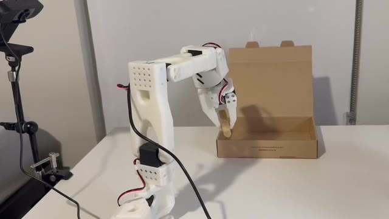
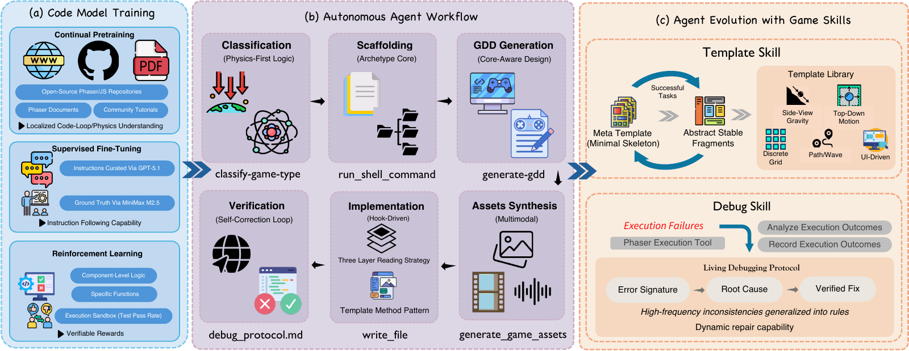

Getting ACT running on a real arm
An early pick-and-place experiment with ACT, using demonstrations I collected by teleoperating my SO‑101 arm.
Hi! I am Jinyuan Hu (胡锦源), an undergraduate in Computer Sciences at the University of Wisconsin–Madison. I transferred from The Chinese University of Hong Kong (CUHK).
I am also a research intern at CUHK MMLab, working with Prof. Xiangyu Yue.
I am interested in learning and adaptation through interaction and feedback, and I am now turning to robotics: adapting robot policies to contact-rich manipulation with limited new experience.
I built an SO‑101 arm at home for closed-loop experiments, and keep lab notes on what I learn.
Transferred from CUHK to the University of Wisconsin–Madison.
Released OpenGame, which turns a prompt into a playable web game.

An early pick-and-place experiment with ACT, using demonstrations I collected by teleoperating my SO‑101 arm.


Undergraduate studies in Computer Sciences
2026–Present
Undergraduate studies in Mathematics and Information Engineering
2024–2026
2021–2024